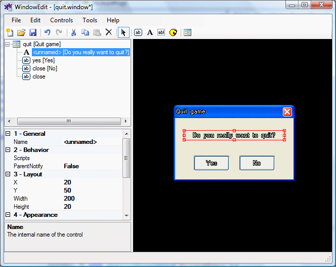
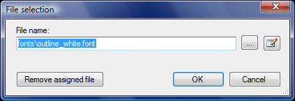
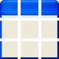
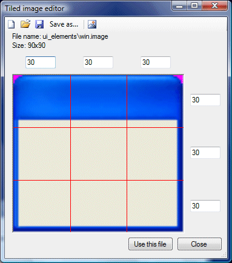

WindowEdit is a tool for creating and editing user-interface elements. The game engine provides several control types, which can be used to compose complex user interface layer. The supported controls are:
Among standard windows, there are also two special kinds of windows serving specific purposes:
You can start the WindowEdit tool either by clicking its icon in the Windows Start menu, or by double-clicking a .window or a .def file in WME ProjectMan. This will either start an empty editor or open the appropriate file for editing. The WindowEdit main window consists of several areas:

The upper-left pane is the layout pane. It displays the layout of the window. You can quickly find and select any control here. To select multiple items, hold down the Control key or the Shift key and click more items.
Below the layout pane there's the property pane. It allows you to view and change the properties of a selected item (or multiple items).
The largest right part of the window is the editor pane. It contains a live preview of the window you're editing. You can select controls by clicking them, you can drag and resize controls using mouse. To select multiple controls, hold down the Control key and click more controls. You can also use the following keyboard shortcuts in the editor pane:
If you hold down the Control key while moving or resizing items by keyboard, the movement will use 5 pixels step.
In addition, WindowEdit supports the standard keyboard shortcuts for using clipboard and for Undo/Redo. You can also use the toolbar or menu-bar to access these functions.
To add a new control, click one of the "Add control" icons on the toolbar or in the Control menu. The mouse pointer will change to crosshair. Now either click or click and drag anywhere within the editor pane to add a new control of a selected type (or right-click to cancel).
If your window contains other nested windows, the new control will be added to the window nearest to the point where you clicked.
To change the order of controls (or to assign controls to another parent window), simply drag and drop items in the layout pane.
Use the property pane to change properties of selected controls. Some properties contain simple textual or numeric value, others allow you to select an external file. External files define the used fonts, background images, background tiled images (see below) scripts and other. To select an external file, select the property you want to change and click the "..." button. This will display the file selection window:

Here you can either manually enter the path to the file you want to assign or browse it on disk using the "..." button. You can remove the currently selected file using the "Remove assigned file" (note this doesn't delete the file, just removes the assignment). Additionally you can click the "Edit selected file" to open the file in an associated external editor.
Once you're happy with your selection, click the OK button to confirm. Please note that you cannot assign external files to multiple selected controls at once, this is by design.
Scripts are assigned in a similar window, which allows you to attach one or more scripts and change their order.
You can notice that WindowEdit allows you to attach either an Image or a TiledImage. Normal images are either static pictures or WME sprites (animations). But what are "tiled images"? Sometimes it's useful to specify a special kind of image which can be "stretched" when needed. This way you can use the same background for windows/controls with variable size. A tiled image looks like this:

Basically you divide the image into 9 rectangles (tiles). If you use such tiled image as a background image of a control, the inside tiles will get repeated to cover the entire width/height of the control.
WindowEdit contains a simple built-in editor for defining tiled images. When you use the file selection window to assign a tiled image and you click the "Edit selected file" button, the tiled image editor is launched:

Here you can select the image file and specify the dimensions of tiles. Use the toolbar icons to open/save tiled image definition files.
If you edit an inventory box or a response box, an extra item will appear in the layout pane, which will allow you to set additional properties of an inventory/response box. Also if you select this item in the layout pane, you can resize the items/responses area with mouse in the editor pane.
Inventory box automatically displays a preview of the item cells based on the inventory box properties.
If the inventory/response window contains buttons named "next" and "prev", these buttons will be automatically used by the engine for scrolling the inventory items / dialogue responses. In addition, the inventory window can contain a button named "close", which will be used to dismiss the inventory window.
You can use the Tools -> Options command to change the default editor values, such as the grid size and the colors used.